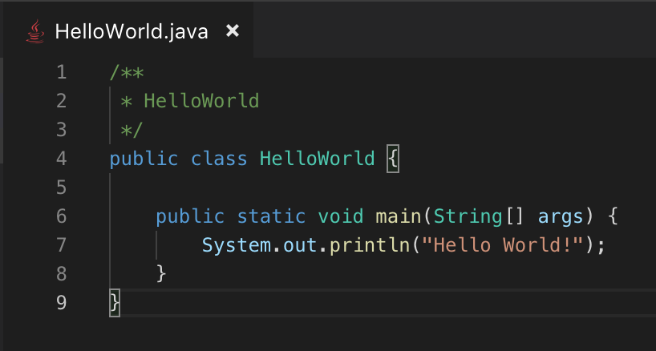
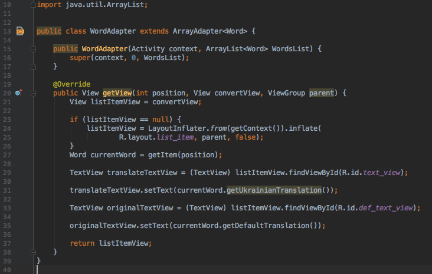

Transitioning from being a high school student into higher education is always a transition filled with uncertainty, doubt and fear. This is sometimes because this transition is the same as the infamous transition between being a teenager and becoming an adult. That is why often times one imagines that ones life will change in a drastic manner once one undergoes that transition. But as is often the case the truth isn’t as grandiose as it might seem, after enrolling in Oslo met for almost 4 months now, if there is one thing that we have learned it would be that becoming a university student, or an adult for that matter is a process; and one that takes time. Coming from high school we expected many things to change; things like the school environment, the workloads, the people etc. While some of that is true, many aspects of the school life has been relatively similar. There are subjects to go through, teachers to learn from, subject material to study and people to work with. So the principle remained almost the same. The one thing that we have noticed tremendous change in though is the scale. What we mean by scale is just how much “stuff” had to be done in order to complete a subject or a project. Usually in high school projects could be completed in a few days, or even in a matter of hours if one was effective. Relative to that our Oslo met experience so far has demanded much more attention, work and effectiveness. Although this was a bit hard at the beginning, we are beginning to get used to it.
Regarding the subjects specifically, the most challenging of all was programming, especially since almost none of us had the subject before coming in to university. The way we see it, programming is like learning an entire different set of skills. It uses its own language that is really hard to get used to, and follows a set of rules that if one is unfamiliar with will take a very long time to understand and work inline with. After discussing in a group what we thought was the most challenging part regarding programming the answer we managed to agree on most was the syntax. The syntax was weird, especially for someone who had no previous experience programming. The it feels weird is that often times one can find just one word, like “person” for instance, repeated multiple times, with each one iteration of the word having its own function and place in the code. This made it very easy for an unexperienced person to become lost in the code, and be unable to figure out exactly what word does what. Confusion regarding the function of pieces of code, never really leads to great results( I can say so from experience). The code easily becomes messy, unintelligible and the program will not work in the way it is meant to. This is why as new students. We are dedicating the majority of our time at the moment, to reading and understanding as much code as possible, in order to get used to the syntax.
To summarize this with a few reflections, we would like to say that despite the challenges and the getting used to the changes university comes with. The journey so far has been really fun. We think that one of the most important things in life is enjoying the moment. And that is precisely what we have been trying to do so far in our course. Although much of the work is tedious and time consuming, the best thing one could do is be patient, learn and try to enjoy it !!!!
"First school day in Oslomet, had fun!
"first program, called : Hello World!"
"More complex programming tasks"